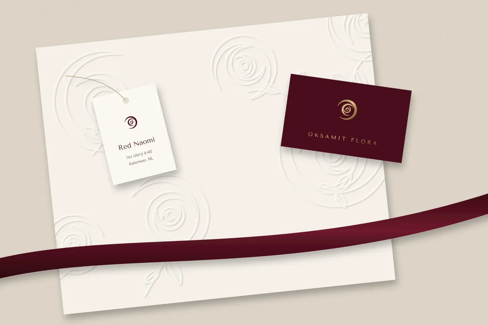

Open to new roles · Brno, hybrid or remote
Graphic designer, photographer & videographer.

12 years behind the camera and a designer’s hand for everything around it: brand identities, social media, print and websites. I work with AI tools every day and take every project from the first idea to the final file myself.
What I do
Brand & graphic design
Logos, visual identities, typography, print, banners and event visuals.
Photography
Brand, people and portrait photography, with my own post-production.
Video
Story-driven video from shooting to edit, cut for social media formats.
Social media & content
Content that works in each format, copywriting and brand building.
Websites
Design in Figma, built and deployed by me, on desktop and mobile.
AI tools, every day: Claude, Claude Code, ChatGPT, Gemini, Midjourney, Runway, Higgsfield and the AI tools in DaVinci Resolve. I judge what they make and finish it by hand.
Selected work
Brand, photo, video and web · client work and own projects
Oksamit Flora, a logo that opens like a rose Identity for a premium online flower shop: logo, colour, typography, packaging and photo art direction. LOUKAL, clothes made to move in Campaign photos and short videos for a Czech label of sustainable women’s clothing, three shoots since 2024. A farm, told through its people
Photos and short videos of a family flower and herb farm that grows petals for Sonnentor’s teas.
A farm, told through its people
Photos and short videos of a family flower and herb farm that grows petals for Sonnentor’s teas.
 Supreme Dental, the faces behind the mask
Team portraits and photos of real treatment for a dental clinic in Brno.
Supreme Dental, the faces behind the mask
Team portraits and photos of real treatment for a dental clinic in Brno.
 A heating engineer people are happy to call
Logo, photos, copy and a website for a local heating business, live since August 2026.
A heating engineer people are happy to call
Logo, photos, copy and a website for a local heating business, live since August 2026.
 A boiler service, seen through a thermal camera
A thermal-camera visual idea, structure, copy and a responsive prototype for a family boiler service.
A boiler service, seen through a thermal camera
A thermal-camera visual idea, structure, copy and a responsive prototype for a family boiler service.
 A cleaning company that doesn’t look like one
Editorial typography and a confident layout for a cleaning company.
A cleaning company that doesn’t look like one
Editorial typography and a confident layout for a cleaning company.
Photography · since 2014
12 years of photographing people.
Portraits, families and brand shoots under my own name, Inna Guba Foto&Video. More photos and films are on my photo website.
See the photo website ↗About

I’m Inna. I notice what people need before they say it, and turn it into design, content and results.
I started in banking, where I spent four years in sales, client care and loan paperwork under tight deadlines. Since 2014 I have run my own photo and video brand, and over the last years I have added brand identities, graphics for social media and print, marketing for a dental clinic and websites.
I like owning a project end to end: the idea, the shoot, the design, the words and the final file. AI tools are part of my everyday work, from images and video to copy and code.
- Brand & graphics
- Illustrator, Photoshop, Figma · identity, typography, social media, print
- Photo, video & motion
- Lightroom, Photoshop, Premiere Pro, DaVinci Resolve, After Effects, CapCut
- Content & marketing
- Meta Business Suite, Canva · copywriting, social media, brand building
- AI tools
- Claude, Claude Code, ChatGPT, Gemini, Midjourney, Runway, Higgsfield
- Web & UX/UI
- Figma, Webflow, GitHub · prototypes, responsive design, I deploy my own sites
- Languages
- Czech, English, Ukrainian, Russian
- Based in
- Brno, Czech Republic · hybrid or remote
Contact
innaguba@seznam.cz+420 774 547 333 · Photo website · LinkedIn · Behance · GitHub · CV (PDF)
Open to design roles in Brno, hybrid or remote. I reply within two working days.